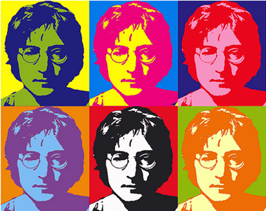

This is a canvas based drawing app that mimics the style of Andy Warhol's famous screenprints.
It consists of 6 monochrome canvases with a common background photograph, surrounded by basic controls: a color picker, background picker, an eraser, a brush size picker, undo and reset buttons.
You can draw with a mouse or touch on most modern browsers.